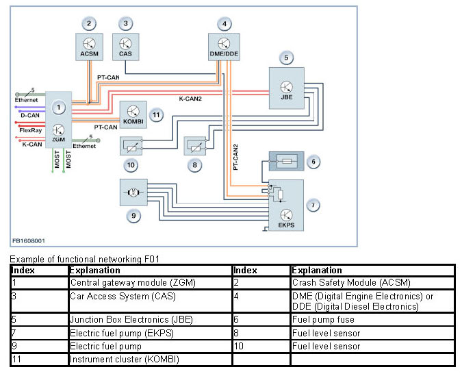
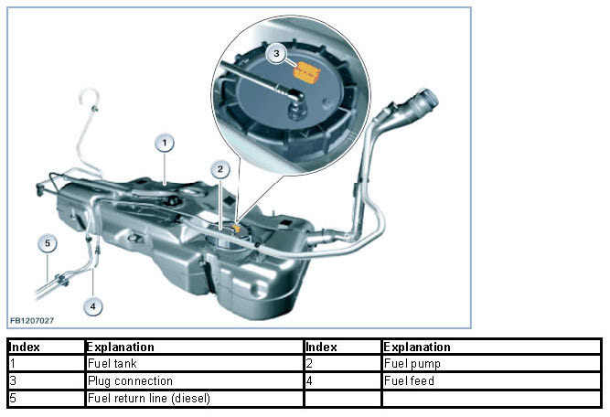

Electronic Control of the Fuel Pump
Electronic Control Of The Fuel Pump
Fuel system
In the "electronic control of the fuel pump" system, the electronic fuel pump is activated in line with requirements. The DME control unit or DDE control unit calculates the volume of fuel required by the engine at each point in time. The total (fuel) volume required is sent as a message across the CAN bus to the EKPS fuel pump control. The fuel pump control (EKPS) regulates the output of the electric fuel pump in such a way that the electric fuel pump delivers exactly the volume of fuel required. In conventional systems, the electric fuel pump is operated constantly at the maximum number of revolutions with the maximum available vehicle voltage. In each operating status, the maximum volume of fuel that could be required is available.
The "electronic control of the fuel pump" system optimizes the fuel supply and lowers fuel consumption. The "electronic control of the fuel pump" system is available for petrol and diesel engines.
System function
The "electronic control of the fuel pump" system includes the following functions:
- Supply of fuel in line with requirements
- Diagnosis of fuel low pressure system
- Emergency operation (full activation of the fuel pump) in the event of CAN communication problems
- Cooling and lubrication of the electric fuel pump and high-pressure pump (diesel engine)

NOTE: The EKPS can also be connected to the powertrain CAN.
Control unit variants
Various fuel pumps can be operated with the EKPS fuel pump control. To do so, there are the following 2 control unit variants:
- Direct current variant (DC)
- Rotary current variant (EC)
With the direct current variant, the fuel pump is driven by a DC motor with permanent magnet. With the rotary current variant, the fuel pump is driven by a brushless three-phase motor with permanent magnet. With the corresponding coding, it is possible to operate various fuel pumps with the relevant variant of the control unit. The two control unit variants are distinguished visually by the colour of their connectors: The direct current variant has a Bordeaux-red connector; the rotary current variant has a white connector.
The EKPS fuel pump control is permanently applied at terminal 30g_z (BN2000) or terminal 30B BN2010) and when it is not active it requires only very low closed-circuit current.
Types of control
To ensure the fuel supply, the engine management system sends a message with a requirement request across the CAN bus to the fuel pump control, EKPS. Depending on the type of control of the fuel pump, this message describes a target delivery volume (speed control) or a setting value by means of pulse width modulation (pressure regulation).
In the case of speed control, the engine management system sends a message with a requirement request across the CAN bus for the volume of fuel in liters per hour. This value is converted on the basis of a characteristic curve in the EKPS into a desired speed and this speed is set.
Pressure regulation involves voltage control. By comparing the current pressure in the feed line to the high-pressure pump with the target pressure, the engine management system sends a request signal across the CAN bus to the EKPS. The EKPS converts this request signal into a nominal voltage. Taking account of the currently applied voltage at terminal 30, this specified voltage is converted into a pulse duty factor (pulse width modulation) and set.
Fuel pump
The electric fuel pump is an in-tank pump. The maximum fuel delivery pressure depends on the low-pressure system.
